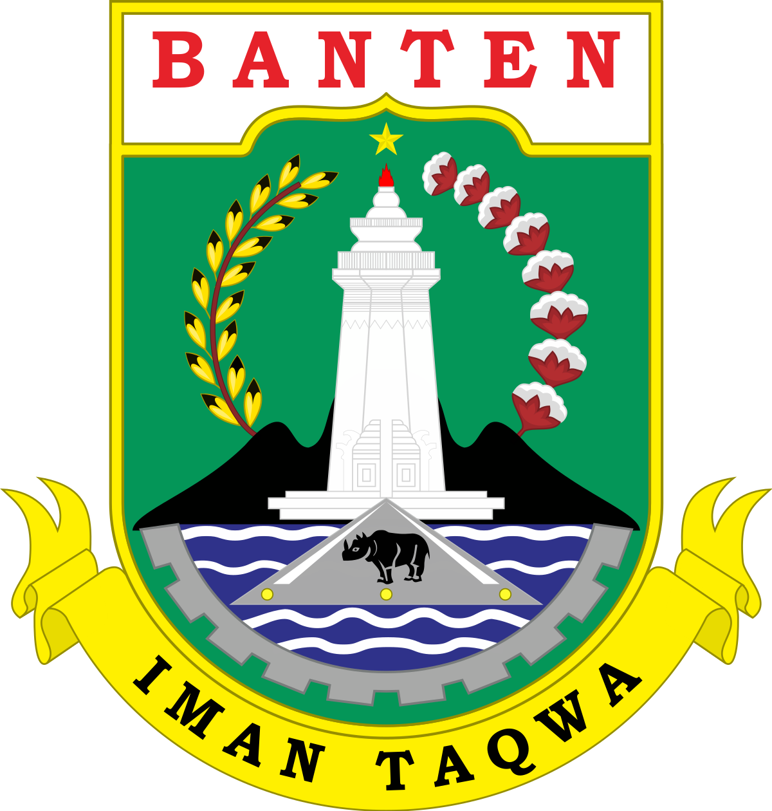

Provinsi Banten
Selamat datang di Provinsi Banten, sebuah permata yang terletak di pesisir barat Pulau Jawa, memikat para pengunjung dengan keberagaman yang kaya akan sejarah, budaya, dan alamnya. Kesultanan Banten yang legendaris adalah saksi bisu dari masa silam yang pernah menjadikan wilayah ini pusat perdagangan rempah-rempah. Situs bersejarah seperti Benteng Speelwijk dan Masjid Agung Banten Lama tetap berdiri kokoh sebagai peninggalan bersejarah yang menarik.
Ayo, mari kita menjelajahi Provinsi Banten bersama-sama. Temukan keindahan alam, nikmati kekayaan sejarah dan budaya, serta rasakan pesona yang memikat. Jadikan petualangan ini sebagai kenangan tak terlupakan. Mari berpetualang di Banten!
Berbagai macam wisata yang ada di provinsi Banten |

Taman Nasional Ujung Kulon
Taman Nasional Ujung Kulon terletak di Semenanjung Ujung Kulon, bagian paling barat di Pulau Jawa, Indonesia. Kawasan taman nasional ini pada mulanya meliputi wilayah Krakatau dan beberapa pulau kecil di sekitarnya seperti Pulau Handeuleum dan Pulau Peucang dan Pulau Panaitan. Kawasan taman nasional ini mempunyai luas sekitar 122.956 Ha; (443 km² di antaranya adalah laut), yang dimulai dari tanah genting Semenanjung Ujung Kulon sampai dengan Samudra Hindia. Ujung Kulon merupakan taman nasional tertua di Indonesia yang sudah diresmikan sebagai salah satu Warisan Dunia yang dilindungi oleh UNESCO pada tahun 1991, karena wilayahnya mencakupi hutan lindung yang sangat luas. Sampai saat ini kurang lebih 50 sampai dengan 60 badak hidup di habitat ini.

Pantai Tanjung Lesung
Pantai Tanjung Lesung adalah surga tepi laut yang mempesona di Provinsi Banten. Dengan pasir putih yang lembut dan air laut yang jernih, pantai ini adalah tempat sempurna untuk bersantai. Selain itu, aktivitas air seperti selancar, menyelam, dan snorkeling menanti para pengunjung yang mencari petualangan. Kawasan ini juga memiliki berbagai akomodasi mewah dan resor yang menyajikan pemandangan yang menakjubkan. Pantai Tanjung Lesung adalah tempat yang luar biasa untuk melarikan diri dari hiruk-pikuk kehidupan kota dan menikmati keindahan alam pantai yang menakjubkan.
Kampung Baduy
Kampung Baduy adalah permukiman yang unik dan kuno di Provinsi Banten. Terkenal karena menjalani kehidupan tradisional yang terisolasi, masyarakat suku Baduy masih mempertahankan tradisi dan adat istiadat kuno. Mereka hidup sederhana, tanpa listrik atau kendaraan bermotor, dan menjaga keaslian budaya mereka. Bagi para pengunjung, Kampung Baduy adalah kesempatan langka untuk merasakan kehidupan tradisional yang masih terjaga dengan baik di tengah modernitas.
Wisata Religi Mesjid Agung Banten
Mesjid Agung Banten, yang terletak di Kota Serang, Provinsi Banten, adalah sebuah destinasi wisata religi yang sangat penting. Dibangun pada abad ke-16, mesjid ini adalah warisan bersejarah dari Kesultanan Banten yang kuat. Pengunjung dapat mengagumi arsitektur Melayu yang megah dan merasakan kedamaian spiritual di tempat ini. Selain sebagai tempat ibadah, mesjid ini juga menjadi saksi bisu perkembangan sejarah dan budaya Banten. Para pengunjung dapat mendalami nilai-nilai keagamaan dan mengeksplorasi pesona sejarah dalam suasana yang damai dan penuh kekhusyukan.Air Terjun Cihear

Air Terjun Cihear adalah salah satu dari berbagai destinasi alam yang menarik di Provinsi Banten. Terletak di Desa Tenjolaya, Kecamatan Mekar Baru, Kabupaten Pandeglang, air terjun ini mempesona dengan keindahan alamnya. Cihear memiliki tiga tingkat air terjun yang saling berdekatan, menciptakan pemandangan yang spektakuler. Air terjun ini dikelilingi oleh hutan tropis, memberikan kesan alam yang alami dan menyegarkan. Para pengunjung dapat menikmati kolam air jernih di bawah air terjun atau menjelajahi lingkungan alam sekitarnya. Air Terjun Cihear adalah destinasi yang sempurna bagi pecinta alam dan petualangan di Provinsi Banten.

Gunung Pulosari
Gunung Pulosari adalah gunung yang terletak di Kabupaten Serang, Provinsi Banten, Indonesia. Gunung ini memiliki ketinggian sekitar 1.134 meter di atas permukaan laut. Gunung Pulosari adalah destinasi pendakian populer di Banten, menawarkan pemandangan alam yang menakjubkan dan udara segar yang menyegarkan. Pendaki dapat menikmati perjalanan yang menantang melalui hutan tropis yang hijau menuju puncak gunung, di mana mereka akan disuguhi panorama luar biasa dan kesempatan untuk merasakan keindahan alam Provinsi Banten secara keseluruhan. Gunung Pulosari adalah tempat yang cocok bagi para pecinta alam dan pendaki gunung.
Benteng Van der Wick
Benteng Van Der Wijck adalah sebuah benteng bersejarah yang terletak di Kota Banten, Provinsi Banten, Indonesia. Benteng ini dibangun pada abad ke-17 oleh pemerintahan Belanda sebagai bagian dari upaya mereka untuk mengendalikan perdagangan rempah-rempah di wilayah ini. Benteng Van Der Wijck adalah salah satu situs bersejarah yang penting dan menarik untuk dikunjungi di Provinsi Banten, karena memberikan wawasan tentang peran pentingnya dalam sejarah perdagangan dan interaksi budaya di masa lalu. Saat ini, benteng ini telah dijadikan objek wisata sejarah yang populer di wilayah tersebut.
Museum Benteng Heritage
Museum Benteng Heritage adalah museum yang terletak di dalam Benteng Van Der Wijck, di Kota Banten, Provinsi Banten, Indonesia. Museum ini didirikan untuk memamerkan sejarah dan warisan budaya yang terkait dengan benteng tersebut. Pengunjung dapat menemukan koleksi artefak sejarah, benda-benda antik, dan informasi yang mengungkapkan peran penting Benteng Van Der Wijck dalam sejarah perdagangan dan kolonialisasi di wilayah Banten. Museum Benteng Heritage merupakan destinasi yang menarik untuk para pengunjung yang ingin mengeksplorasi sejarah dan budaya Provinsi Banten melalui artefak bersejarah dan informasi yang disajikan.Makanan Khas Banten
Masakan khas Maluku mencerminkan pengaruh budaya dan rempah-rempah yang melimpah. Bumbu rempah-rempah seperti cabai, kunyit, dan serai sering digunakan dalam hidangan-hidangan lokal. Makanan khas Maluku termasuk papeda (hidangan sagu), ikan woku (hidangan ikan berbumbu), dan banyak hidangan laut segar.

Sate Bandeng

Rabeg
:strip_icc():format(webp)/kly-media-production/medias/4592683/original/078105500_1695980565-Sambal_Buroq.jpg)
Sambel Buroq

Ketan Bintul

Kue Cuecur

Kue Jojorong - Sibu

Es Sekemu